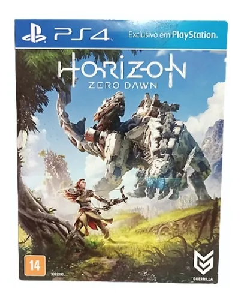

🎮 Hobbies e Interesses
Fora do código, eu também sou movido por curiosidade e criatividade. Meus
hobbies e interesses são variados e complementam meu perfil profissional:

Jogos de estratégia e lógica: Adoro jogos como dama, campo minado, batalha naval e jogo da velha, que estimulam o raciocínio, o planejamento e a tomada de decisões — habilidades que também aplico na programação.
Desenvolvimento de jogos:Gosto de desenvolver pequenos jogos como forma de aprender novas linguagens e aprimorar minha lógica de programação, além de tornar o aprendizado mais divertido.
Exploração de novas tecnologias:Tenho grande interesse em frameworks modernos como Flutter, Angular, React e Node.js, e estou sempre testando novas ferramentas e APIs.
Design e estética de interfaces: Como estudante da área, me interesso por tudo que envolve desenvolvimento corporal, saúde, movimento e desempenho humano. Acredito que corpo e mente devem estar em sintonia, especialmente em uma rotina de trabalho técnico.
 Panificação e tecnologia de alimentos:Tenho prazer em trabalhar com animações, paletas de cores harmônicas e layouts bem estruturados. Para mim, a estética também comunica profissionalismo.
Panificação e tecnologia de alimentos:Tenho prazer em trabalhar com animações, paletas de cores harmônicas e layouts bem estruturados. Para mim, a estética também comunica profissionalismo.
Panificação e tecnologia de alimentos:: Um interesse mais alternativo, mas que mostra meu lado curioso: gosto de entender processos industriais e científicos da produção de alimentos, especialmente na panificação.